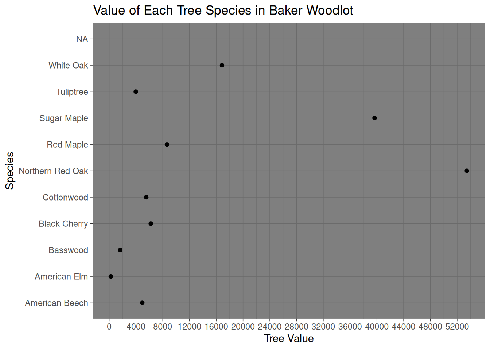
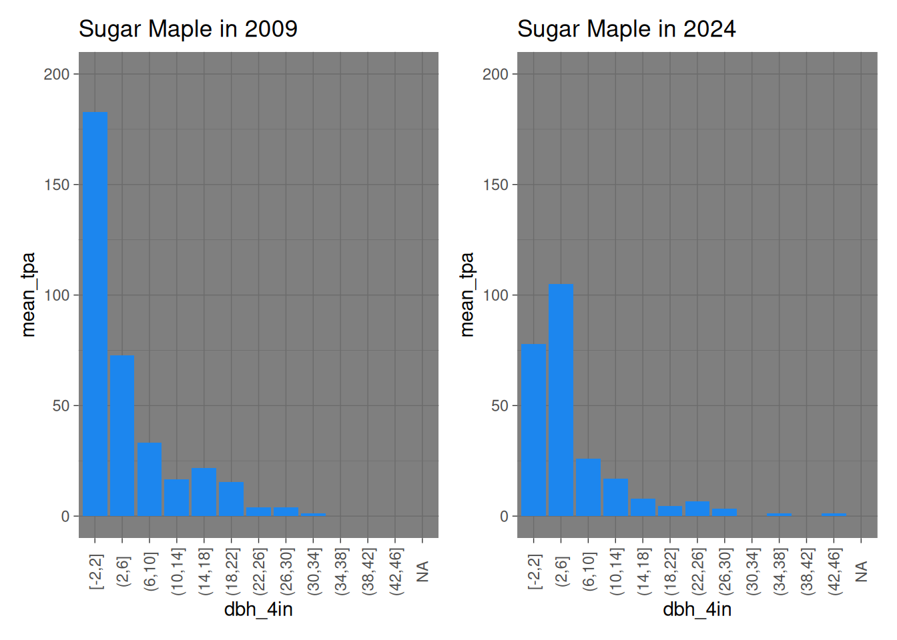
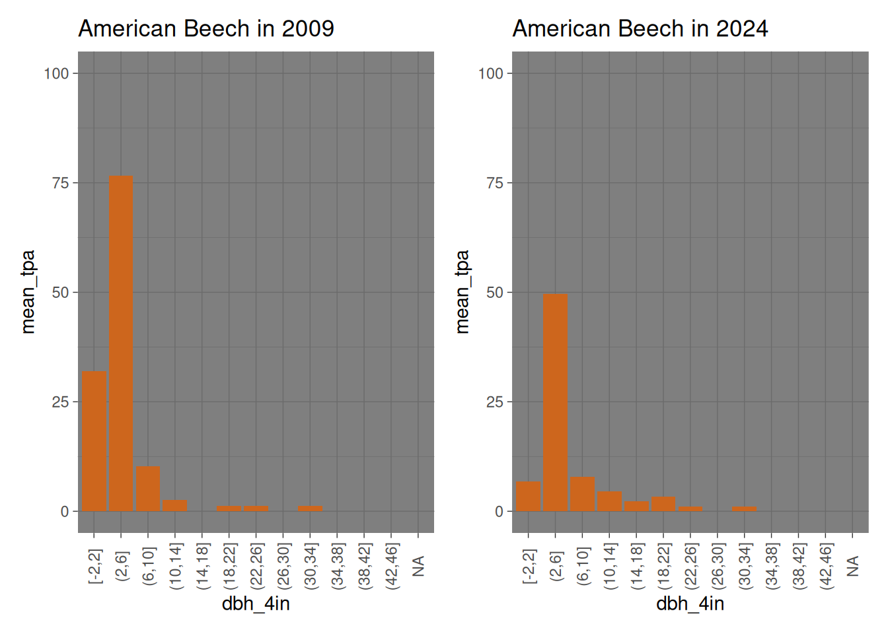
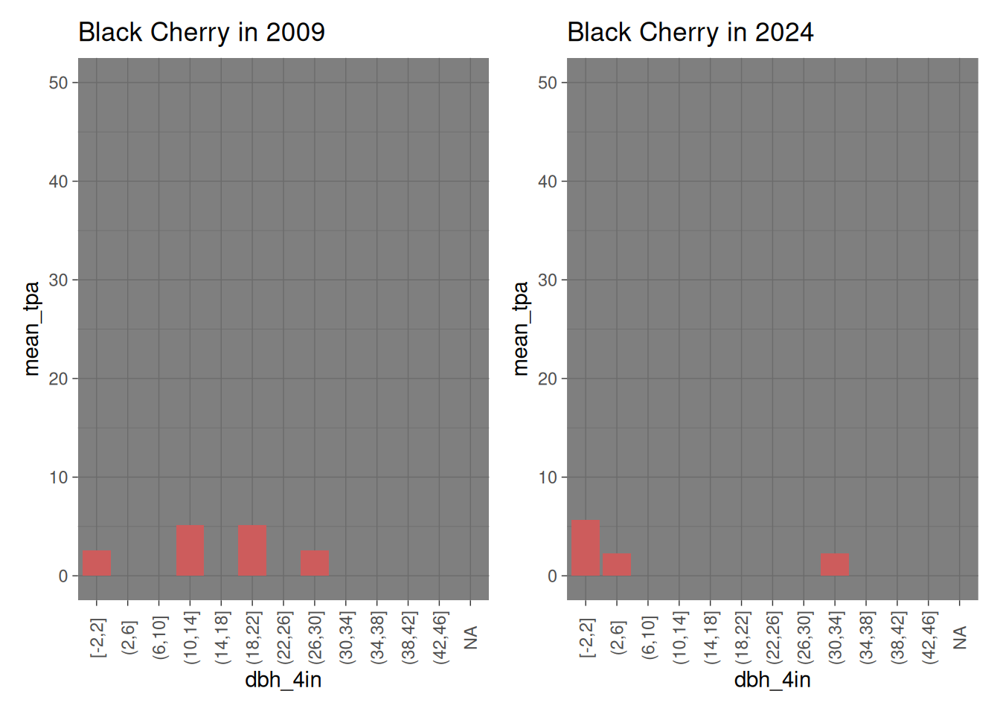
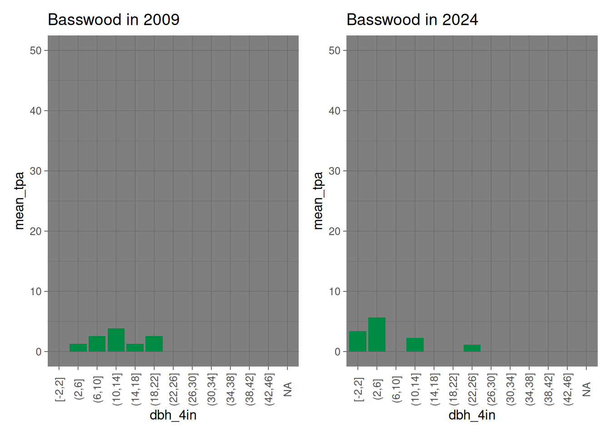
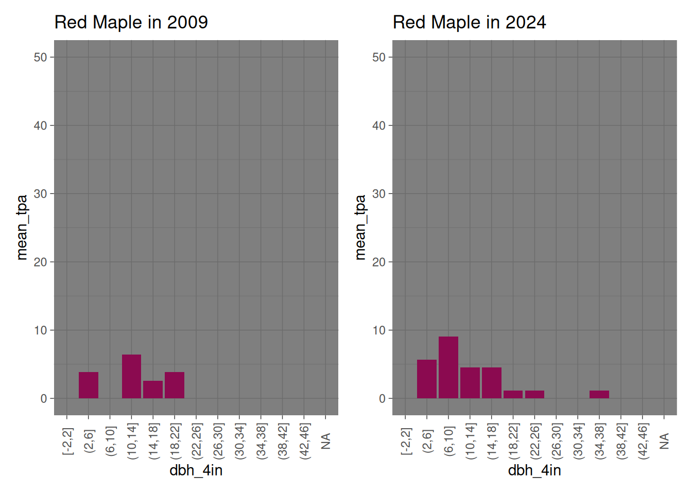
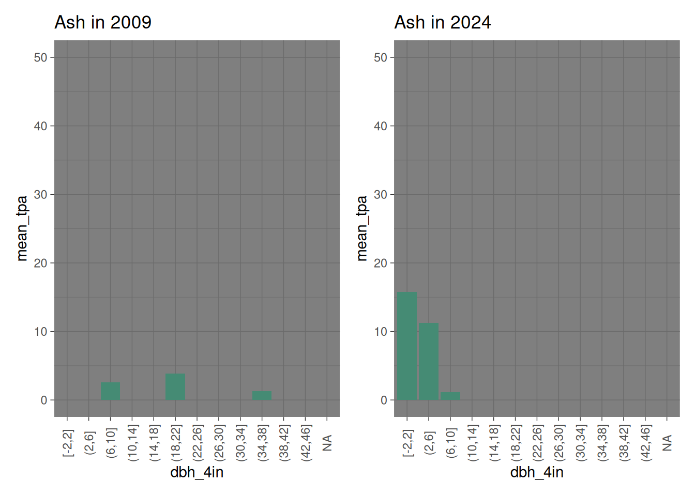
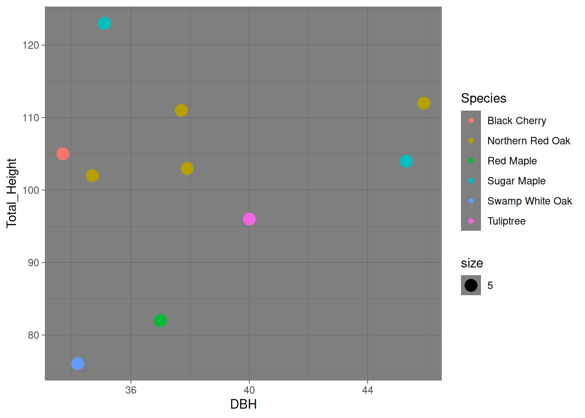

The ecosystems that surround us hold several valuable assets that are vital for human and environmental well-being. To say that forested ecosystems are extremely valuable would be an understatement. Wood from forests is a timeless commodity for obvious reasons. However; many less apparent values are present such as the amount of carbon a forest can sequester as well as how much of a forest contains organic material. These are just a few of the many values a forest holds, but they are easy values to acquire with simple measurements such as DBH, tree height, and species. In this post we will explore why these values are important and evaluate them in a local forested ecosystem, Baker Woodlot. Baker Woodlot is on the Michigan State University campus and subsequently there have been several other records of this data overtime which will allow us to attempt to compare the woodlot’s makeup in the past with its present state. After these many aspects of Baker Woodlots value are assessed we hope to provide a well educated conclusion of the current state of Baker Woodlot.
Amount of plots measured: 36 20th acre plots of the total 73 in Baker Woodlot (every other plot)
I had 8 plots and the rest had 7 plots.
Data collected: DBH, Tree Height, Species, Sawlogs
Amount of time used to collect data: 35 hours
Challenges during data collecting:
It was snowing during our data collecting and lower temps caused cold hands and feet and fatigue, decreasing our efficiency. The snow caused slippery terrain and made it more difficult to find the plot flags from a distance. I didn’t have a GPS to find my plots so I had to rely on plot flags, the plot map, and my compass to navigate Baker Woodlot. Lavonnes only had his Biltmore Stick so Luke and Riley had to help him collect his data.
Monetary Value
Introduction
476,000 years ago is the oldest documented human use of timber. However, It is very likely that crude uses of timber had been prevalent before this time. From its humble beginnings to its now omnipotent status in the world of creation, wood is undoubtedly a necessity for the function of the human species. Look in any building, any collection of instruments, any craft store and you will find wood products. With the development of trade it would be natural for wood to become a highly desirable commodity. Today we are able to define exactly what this commodity should be valued at with two simple measurements of diameter at breast height and the amount of saw logs at 16 feet above a DBH of 10. DBH and saw logs can be translated to a unit called board feet which represents an amount of wood that a mill can extract from saw logs. The prices of these board feet can vary depending on the type of wood being processed. Many variables such as demand for a certain wood, durability of the wood, weight of the wood, ect. can influence the market price. Using the 1/4 international log scale we are able to determine the total value of Baker Woodlot like so:
Here is a function that will allow us to know how many Board Feet are in any tree given its DBH and amount of saw logs.
Code
"int-1/4_log_rule"<-function(DBH, Saw_Logs) {stopifnot("the value 'Saw_Logs' should be numeric"=is.numeric(Saw_Logs),"the value DBH should be numeric"=is.numeric(DBH))a <--13.35212+9.58615*Saw_Logs+1.52968*Saw_Logs^2b <- (1.79620-2.59995*Saw_Logs-0.27465*Saw_Logs^2)*DBHc <- (0.04482+0.45997*Saw_Logs-0.00961*Saw_Logs^2)*DBH^2board_foot_volume <- a+b+creturn (board_foot_volume)}
This ggplot aims to illustrate the values that each species holds overall. As we can see the Northern red oak provides extensive value to Baker as it far outpaces other species values. This makes sense given the surplus of Red Oaks and their large size and respectable value.
Code
ggplot(Valued_Trees, mapping =aes(x=Species, y=tree_value))+geom_point()+coord_flip()+scale_y_continuous(breaks =seq(0,55000, by=4000))+labs(y="Tree Value",title ="Value of Each Tree Species in Baker Woodlot ")+theme_dark()

Species of Baker Woodlot and Change
Introduction
I intended to analyze how the species of Baker Woodlot have changed over time. To do this, I contacted Dr. MacFarlane, and he kindly provided me with a dataset from his 2009 class.
Dataset Optimizing
I optimized his dataset by joining it with a species code, altering the name, and removing columns I don’t need.
# A tibble: 468 × 7
Plot_Number Tree_Number Collecter DBH Total_Height Saw_Logs Species
<dbl> <dbl> <chr> <dbl> <dbl> <dbl> <chr>
1 2 1 Braeden 2.1 23 0 Sugar Maple
2 2 2 Braeden 3.6 31 0 Sugar Maple
3 2 3 Braeden 1.3 12 0 Sugar Maple
4 2 4 Braeden 1.8 18 0 Sugar Maple
5 2 5 Braeden 1 12 0 Sugar Maple
6 2 6 Braeden 2.9 36 0 Sugar Maple
7 2 7 Braeden 2.2 27 0 Sugar Maple
8 2 8 Braeden 2.2 29 0 Sugar Maple
9 2 9 Braeden 3 30 0 Sugar Maple
10 2 10 Braeden 34.7 102 2.5 Northern Red O…
# ℹ 458 more rows
Next, I extrapolate both datasets over Baker Woodlot. MacFarlane’s 2009 dataset gives a plot# I can use to find out how many plots were measured.
length(unique(baker_2009$`plot#`))
[1] 37
MacFarlane’s dataset contains 37 plots. This means that after extrapolating the data into full plots, the data will represent 37 acres. Baker woodlot is 73 acres, and 73/37 = 1.97 This means I will multiply the expanded plots by 1.97 to get an accurate representation of Baker Woodlot.
Next, we can see by looking at the “plot size (ft)” column that the 2009 dataset has two plot sizes: 6.8 feet and 24 feet, or a 300th of an acre plot and (roughly) a 24th of an acre plot. Using these two values, I can extrapolate the data and call the resulting expansion the tree factor:
The data shows a drop in trees from 2009 to 2024. In fifteen years, the data shows a roughly 18% drop in the number of trees. This seems slightly beyond the expected change for the forest, so I assume that the two different methods of sampling are causing the issue. In the 2009 dataset, the data was collected on two plots. In the smaller one, trees were measured if 1 -< DBH -< 5, while on the bigger one all trees with a DBH at or above 5 were measured. I found the 95th percentage confidence to see if method error could account for the change:
Code
# Code in this section is mainly written by Grayson Whiteest_24 <- baker_2024 %>%group_by(Plot_Number) %>%summarize(n =n()) %>%summarize(mu =mean(n), sd =sd(n) /sqrt(n())) %>%mutate(mu = mu *20*73, sd = sd *20*73) %>%mutate(lower = mu -1.96*sd, upper = mu +1.96*sd)est_09 <- baker_2009 %>%group_by(`plot#`, `plot radius (ft)`) %>%mutate(n =ifelse(tf ==0, 0, 1)) %>%summarize(n =sum(n)) %>%mutate(n20 =ifelse(`plot radius (ft)`==6.8, n*300/20, n*24/20)) %>%summarize(n =sum(n20)) %>%summarize(mu =mean(n), sd =sd(n) /sqrt(n())) %>%mutate(mu = mu *20*73, sd = sd *20*73) %>%mutate(lower = mu -1.96*sd, upper = mu +1.96*sd)
`summarise()` has grouped output by 'plot#'. You can override using the
`.groups` argument.
The two bars in this graph represent 95% of possible errors: that is, we are 95% positive that the actual sum of the trees of Baker Woodlot is within that range.
Results
It could be possible that Baker Woodlot is losing smaller trees while the larger trees are still getting bigger. To test this idea, I created a stand table for both years. The code for the stand table comes from FOR 128 Lab 9.
Comparing the two datasets shows some interesting points (Note that different species have different y-axis scales):
Both american beech and sugar maple have larger numbers in higher dbh classes, showing that the average size of these trees are increasing. This makes sense as these species are the climax vegetation in lower Michigan in the absence of fire.
Code
library(patchwork)sugar_maple_2009 <-filter(baker_stand_2009_graph, Species =="Sugar Maple") %>%ggplot(mapping =aes(x = dbh_4in, y = mean_tpa )) +geom_col(fill ="dodgerblue2") +scale_y_continuous(limits =c(0, 200)) +theme_dark() +theme(axis.text.x =element_text(angle =90, vjust =0.5)) +labs(title ="Sugar Maple in 2009")sugar_maple_2024 <-filter(baker_stand_2024_graph, Species =="Sugar Maple") %>%ggplot(mapping =aes(x = dbh_4in, y = mean_tpa )) +geom_col(fill ="dodgerblue2") +scale_y_continuous(limits =c(0, 200)) +theme_dark() +theme(axis.text.x =element_text(angle =90, vjust =0.5)) +labs(title ="Sugar Maple in 2024")sugar_maple_2009 + sugar_maple_2024

Code
library(patchwork)american_beech_2009 <-filter(baker_stand_2009_graph, Species =="American Beech") %>%ggplot(mapping =aes(x = dbh_4in, y = mean_tpa )) +geom_col(fill ="chocolate3") +scale_y_continuous(limits =c(0, 100)) +theme_dark() +theme(axis.text.x =element_text(angle =90, vjust =0.5)) +labs(title ="American Beech in 2009")american_beech_2024 <-filter(baker_stand_2024_graph, Species =="American Beech") %>%ggplot(mapping =aes(x = dbh_4in, y = mean_tpa )) +geom_col(fill ="chocolate3") +scale_y_continuous(limits =c(0, 100)) +theme_dark() +theme(axis.text.x =element_text(angle =90, vjust =0.5)) +labs(title ="American Beech in 2024")american_beech_2009 + american_beech_2024

Black cherry has a more evident trend: The middle sized trees have all died, but there seems to be recruitment in their place. The biggest black cherries are still getting bigger.
Code
black_cherry_2009 <-filter(baker_stand_2009_graph, Species =="Black Cherry") %>%ggplot(mapping =aes(x = dbh_4in, y = mean_tpa )) +geom_col(fill ="indianred") +scale_y_continuous(limits =c(0, 50)) +theme_dark() +theme(axis.text.x =element_text(angle =90, vjust =0.5)) +labs(title ="Black Cherry in 2009")black_cherry_2024 <-filter(baker_stand_2024_graph, Species =="Black Cherry") %>%ggplot(mapping =aes(x = dbh_4in, y = mean_tpa )) +geom_col(fill ="indianred") +scale_y_continuous(limits =c(0, 50)) +theme_dark() +theme(axis.text.x =element_text(angle =90, vjust =0.5)) +labs(title ="Black Cherry in 2024")black_cherry_2009 + black_cherry_2024

Basswood also shows mortality in middle dbh classes, but this also has led to recruitment. The biggest basswoods have also moved into a larger dbh class.
Code
basswood_2009 <-filter(baker_stand_2009_graph, Species =="Basswood") %>%ggplot(mapping =aes(x = dbh_4in, y = mean_tpa )) +geom_col(fill ="springgreen4") +scale_y_continuous(limits =c(0, 50)) +theme_dark() +theme(axis.text.x =element_text(angle =90, vjust =0.5)) +labs(title ="Basswood in 2009")basswood_2024 <-filter(baker_stand_2024_graph, Species =="Basswood") %>%ggplot(mapping =aes(x = dbh_4in, y = mean_tpa )) +geom_col(fill ="springgreen4") +scale_y_continuous(limits =c(0, 50)) +theme_dark() +theme(axis.text.x =element_text(angle =90, vjust =0.5)) +labs(title ="Basswood in 2024")basswood_2009 + basswood_2024

Red maple shows significant growth in moderate dbh categories along with a small number of large ones. This makes sense since red maple can thrive in almost any condition.
Code
red_maple_2009 <-filter(baker_stand_2009_graph, Species =="Red Maple") %>%ggplot(mapping =aes(x = dbh_4in, y = mean_tpa )) +geom_col(fill ="deeppink4") +scale_y_continuous(limits =c(0, 50)) +theme_dark() +theme(axis.text.x =element_text(angle =90, vjust =0.5)) +labs(title ="Red Maple in 2009")red_maple_2024 <-filter(baker_stand_2024_graph, Species =="Red Maple") %>%ggplot(mapping =aes(x = dbh_4in, y = mean_tpa )) +geom_col(fill ="deeppink4") +scale_y_continuous(limits =c(0, 50)) +theme_dark() +theme(axis.text.x =element_text(angle =90, vjust =0.5)) +labs(title ="Red Maple in 2024")red_maple_2009 + red_maple_2024

For my final species comparison I am using white ash from 2009 and green ash from 2024 because the 2009 dataset contains no green ashes while the 2024 dataset has no white ashes. The 2009 dataset does contain large ashes, but they have all been killed by the emerald ash borer now. A whole host of small ashes have sprung up in disturbed areas.
Code
ash_2009 <-filter(baker_stand_2009_graph, Species =="White Ash") %>%ggplot(mapping =aes(x = dbh_4in, y = mean_tpa )) +geom_col(fill ="aquamarine4") +scale_y_continuous(limits =c(0, 50)) +theme_dark() +theme(axis.text.x =element_text(angle =90, vjust =0.5)) +labs(title ="Ash in 2009")ash_2024 <-filter(baker_stand_2024_graph, Species =="Green Ash") %>%ggplot(mapping =aes(x = dbh_4in, y = mean_tpa )) +geom_col(fill ="aquamarine4") +scale_y_continuous(limits =c(0, 50)) +theme_dark() +theme(axis.text.x =element_text(angle =90, vjust =0.5)) +labs(title ="Ash in 2024")ash_2009 + ash_2024

For fun, I’ll wrap up by finding the ten largest trees in Baker Woodlot by dbh and their species:
baker_2024 %>%slice_max(DBH, n =10) %>%ggplot(mapping =aes(x = DBH, y = Total_Height, color = Species, size =5)) +geom_point() +theme_dark()

Carbon Sequestration of Baker Woodlot
Baker woodlot has 78 acres of forests. In Baker there is a wide variety of trees, the most common being oaks, maples and beeches. These large trees are excellent at being able to take in carbon from the atmosphere and by doing some pretty simple equations we’re able to figure out how much carbon dioxide (CO2) is taken in by baker woodlot.
Step 1
First we calculate the above ground biomass (AGB) which uses the equation:
.25 x D^2 x H
For D we found the average combined diameter in a tenth of an acre plot
which we calculated to be 154.38 in
For H we found the average combined height in a tenth of an acre plot
which we calculated to 786 ft
Using the equation we find that there is 4,683,220 lbs of AGB
Step 2
The next step is calculating below ground biomass (BGB) which uses the equation: .2 x AGB
Using this equation we find there is 936,644 lbs of BGB
Step 3
Next we add the two (AGB and BGB) together to find the Total Biomass (TB) which is 5,619,864 lbs of TB
Step 4
Step 4 involves calculating the total dry weight (TDW) which uses the equation: .725xTB
We just plug in our TB (5,619,864) and we get 4,704,401 lbs of TDW
Step 5
For the next step we are figuring how much total carbon (tc) there is which uses the equation: .5 x TDW, which using tour TDW gives us 2,037,200.7 lbs of TC
Step 6
Step 6 calculates the total CO2 sequestrated which uses the equation 3.67 x TC.
Using our total carbon of 2,037,200.7 lbs we get a total CO2 weight of 7,476,526.569 lbs or 3738.26 tons of CO2 sequestrated per tenth of an acre
Step 7
From here it gets really simple we just multiply by ten to get the per acre sequestration total, 37382.6 tons, and then multiply by 78 to get the total carbon sequestration of baker in tons.
As it currently stands Baker Woodlot Sequesters roughly 2,915,842 tons of CO2, to put that into perspective MSU as whole puts out 585,867 tons of CO2. This means Baker takes in nearly 6 times the amount of CO2 MSU puts out!
Conclusion
It is very clear in the end that Baker Woodlot holds value in many regards, and the findings we have come up with can give us a glimpse into the potential future of this area. Given its status as an “old growth forest” and its location on a college campus it is unlikely to be harvested anytime soon. This is further supported given its relatively low value overall and the high carbon sequestration rates Baker provides. In terms of species composition, the quantity of large trees seem to be restricting the ability of gap-phase and shade tolerant species to develop, however this trend may change in the future assuming some of the larger trees will be approaching the end of their lifespans. While Baker Woodlot is just one example of a valuable ecosystem, there is value in all ecosystems and thus it is our responsibility to respect and manage them diligently.